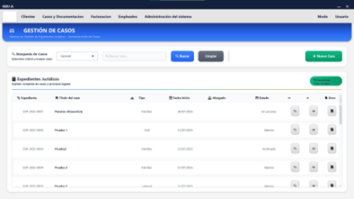
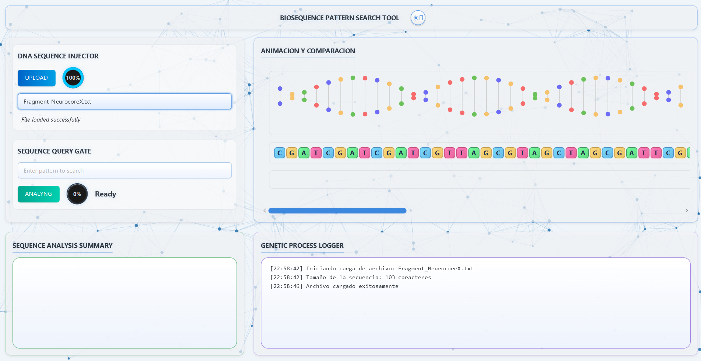
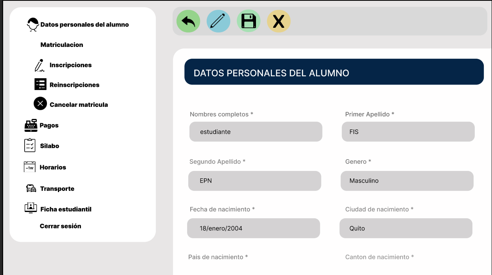
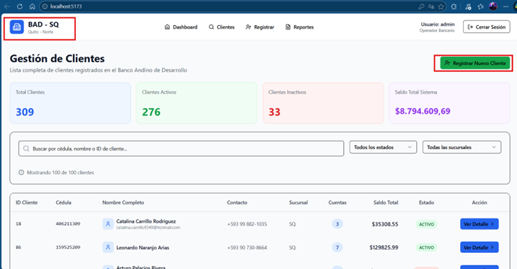
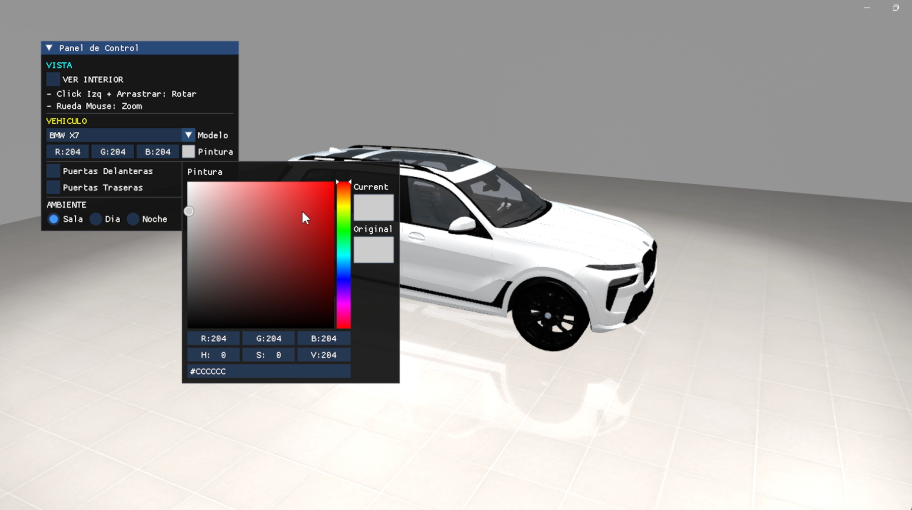

Sistema de Gestión Jurídico
Aplicación para la gestión de procesos legales.
Tecnologías: Java · JavaFX · SQL
Ver código en GitHub ↗ (abre en una pestaña nueva)Mi trabajo
Una selección de trabajos académicos donde aplico programación, algoritmos, bases de datos y desarrollo gráfico.
Trabajo seleccionado
5 proyectos

Aplicación para la gestión de procesos legales.
Tecnologías: Java · JavaFX · SQL
Ver código en GitHub ↗ (abre en una pestaña nueva)
Visualización del algoritmo Boyer-Moore para búsqueda de patrones.
Tecnologías: Java · JavaFX
Ver código en GitHub ↗ (abre en una pestaña nueva)
Sistema de administración y registro de conductores.
Tecnologías: Java · SQLite
Ver código en GitHub ↗ (abre en una pestaña nueva)
Aplicación web con conexión a bases de datos distribuidas.
Tecnologías: Spring · Java · SQL
Ver código en GitHub ↗ (abre en una pestaña nueva)
Proyecto gráfico para visualizar vehículos en 3D.
Tecnologías: OpenGL · C++
Ver código en GitHub ↗ (abre en una pestaña nueva)